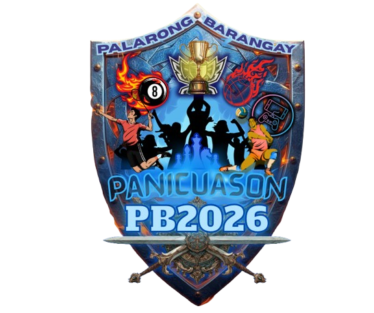

Programs & Initiatives
Each program is designed with the youth in mind — accessible, impactful, and community-driven. Click on any picture to view its details and register!
Educational Assistance Program
Provides scholarships, school supplies, and academic support to deserving youth facing financial barriers...

Sports & Recreation Program
Organizes inter-barangay leagues, fitness sessions, and sports clinics to promote physical health and teamwork...

Livelihood & Skills Training
Free workshops on entrepreneurship, cooking, handicrafts, digital skills, and practical tools for employment...

Youth Health & Wellness
Free medical and dental missions, mental health awareness sessions, and health seminars to ensure community access...

Arts & Culture Program
Celebrates local talent through festivals, art exhibits, and performance arts workshops preserving heritage...

Environmental Awareness
Tree planting drives, clean-up campaigns, and eco-education seminars that teach youth local climate action...

Digital Literacy Program
Basic computer training, internet safety, and digital workspaces to equip youth with modern workforce tools...

Leadership & Governance
Youth leadership camps, seminars on civic responsibility, and transparent governance training modules...

Community Service & Outreach
Feeding programs, disaster response volunteer clusters, and projects instilling the values of bayanihan...